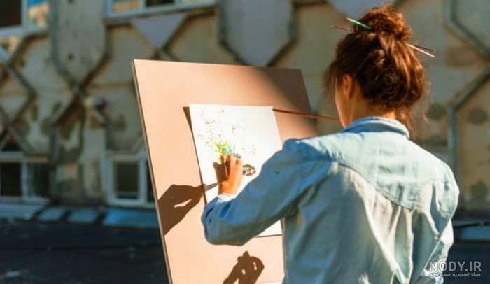
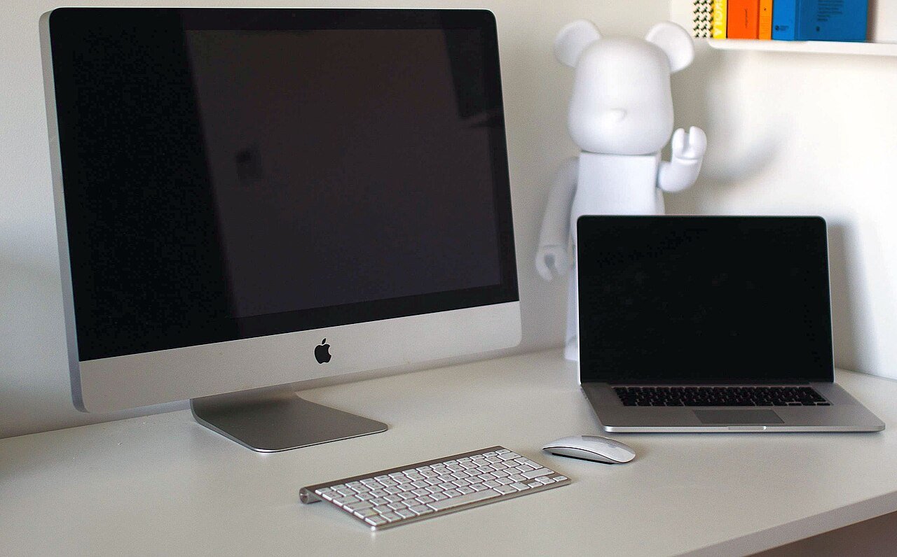
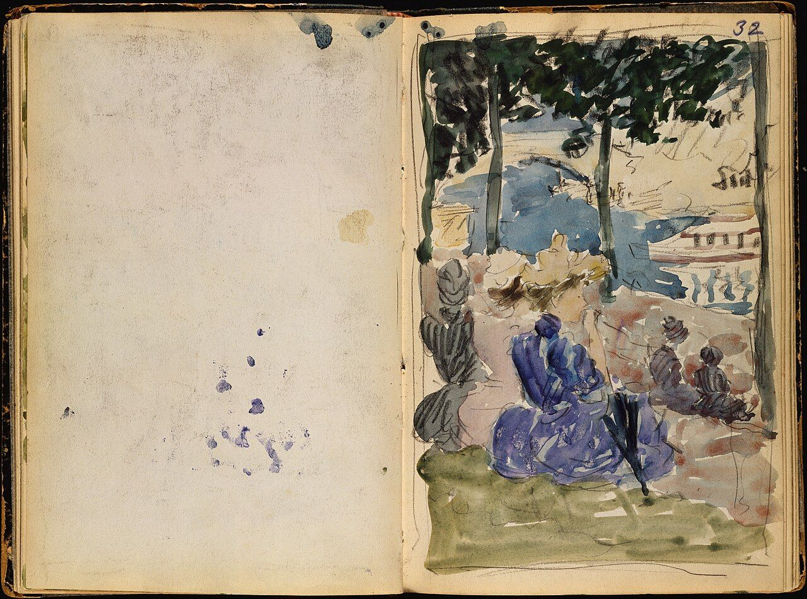
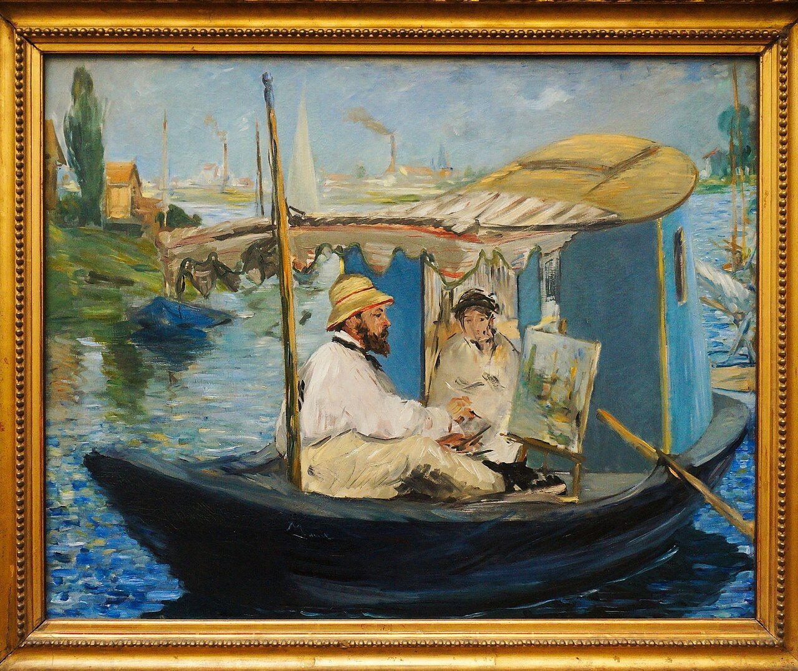
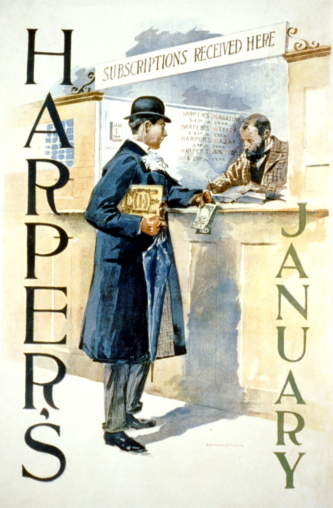
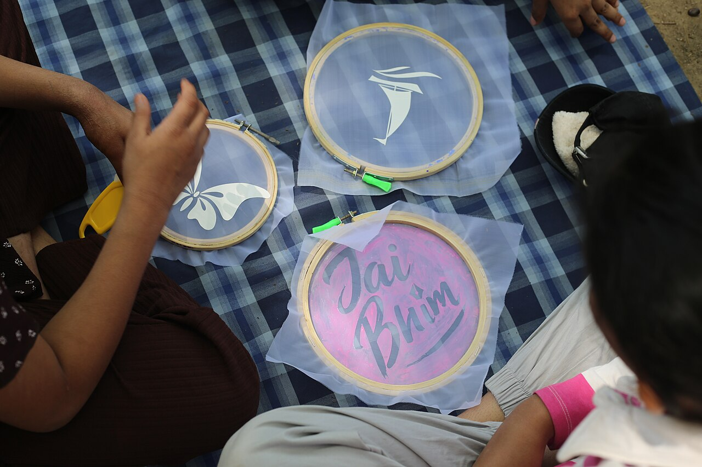
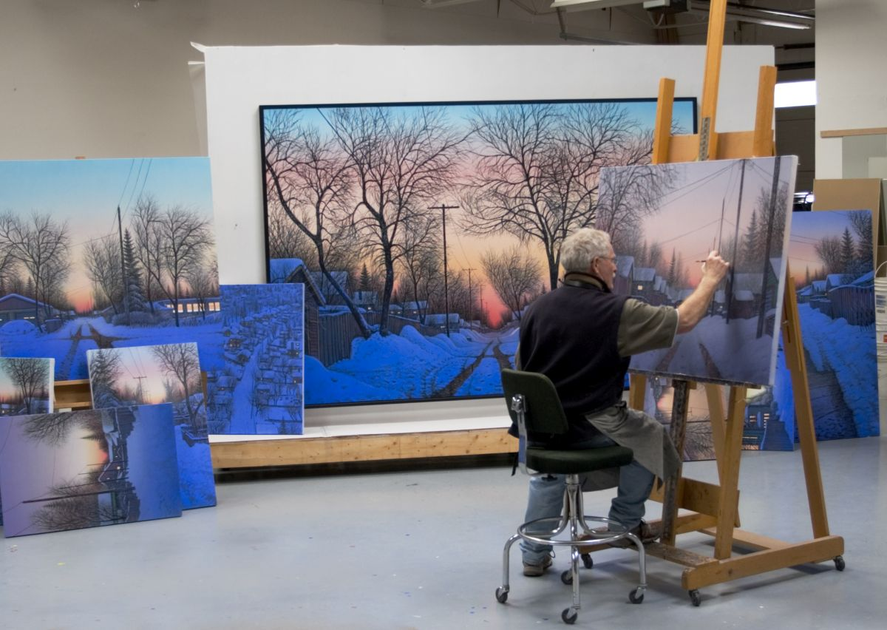
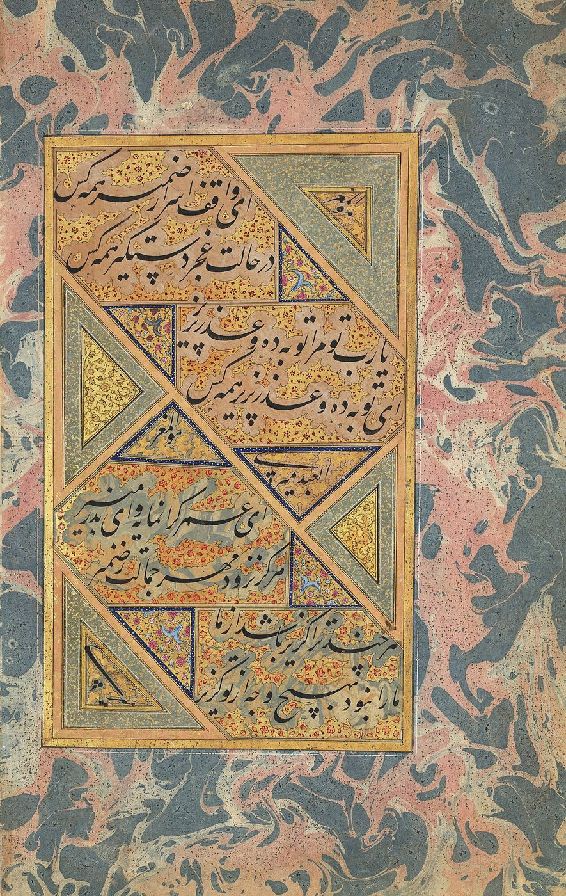

سلام، من سارا هستم؛ طراح محصول
هشت سال است محصولهای دیجیتال طراحی میکنم؛ از اپلیکیشنهای سلامت تا پلتفرمهای آموزشی. عاشق پژوهش کاربر هستم و باور دارم طراحی خوب، یعنی تصمیمهایی که کاربر را نمیآزارد.




درباره من
طراحی برای انسانهای واقعی
کارم را با روانشناسی شروع کردم و به طراحی محصول رسیدم؛ جایی که کنجکاوی و منطق به هم میرسند. وقتی کار نمیکنم، در حال پیادهروی طولانی، مطالعه کتاب یا نوشتن درباره تصمیمهای طراحی هستم.
- مدرک کارشناسی ارشد طراحی تعاملی
- متخصص پژوهش کاربر و تست قابل استفاده بودن
- مدرس کارگاههای طراحی محصول
- فارسی و انگلیسی کاری

مهارتها
ابزارهایی که هر روز با آنها کار میکنم
تخصصها
در چه کارهایی حرفهایام
نمونهکارها
پروژههایی که دوستشان دارم

اپلیکیشن پیگیری دارو

پلتفرم آموزش آنلاین درسا
پژوهش رفتار پرداخت موبایلی
اپلیکیشن کتاب صوتی نوار

داشبورد مدیریت فروشگاهی

مطالعه دسترسپذیری بانکداری
مسیر حرفهای
از جایی که شروع کردم
۱۳۹۷ — طراح رابط، استودیو نگار
اولین شغل حرفهایام؛ طراحی سایت برای مشتریان کوچک و یادگیری سریع از بازخوردهای واقعی.
۱۴۰۰ — طراح محصول، مدتک
عضو تیم محصول اپلیکیشن بانکی؛ مالکیت فرآیند ثبتنام و کاهش ۳۰٪ خطای کاربران.
۱۴۰۲ — طراح ارشد، سلامتپlus
رهبری طراحی اپلیکیشن سلامت با تیمی پنجنفره و راهاندازی سیستم دیزاین داخلی.
۱۴۰۴ — مستقل
همکاری با استارتاپها بهعنوان طراح مستقل؛ پژوهش، طراحی و تست از صفر تا انتشار.
نظرات همکاران
آنها که با من کار کردند
سارا تنها کسی است که دیدهام قبل از طراحی، اول سوال درست را میپرسد. خروجی کارش همیشه دقیقتر از چیزی بود که تصور میکردیم.
 امیر کاظمیمدیر محصول، مدتک
امیر کاظمیمدیر محصول، مدتک
همکاری با سارا یادم داد که پژوهش کاربر عجله را کم میکند، نه زیاد. پروژه ما با اطمینان و بدون بازکاری پیش رفت.
 مریم اسدیبنیانگذار سلامتپlus
مریم اسدیبنیانگذار سلامتپlus
کارگاه UX که برای تیم ما برگزار کرد، واقعاً چشمبازکننده بود؛ بعد از آن جلسههای طراحی ما حسابی عوض شد.
 لیلا اکبریمدیر محصول، آموزشگاه نویان
لیلا اکبریمدیر محصول، آموزشگاه نویان
سوالات متداول
پرسشهایی که زیاد میشوم
بیشتر پروژهای با بازه زمانی مشخص؛ برای استارتاپهای کوچک، همکاری ماهانه هم دارم. همیشه قبل از شروع، یک جلسه آشنایی رایگان میگذاریم.
کشف و پژوهش، طراحی اطلاعات، طراحی رابط، تست و تحویل به تیم توسعه. در هر مرحله نسخه قابل بازبینی تحویل میدهم و بازخورد شما بخشی از فرآیند است.
بله؛ بسیاری از تیمها فقط برای مصاحبه کاربر، تست قابل استفاده بودن یا ممیزی UX با من کار میکنند و خروجی را خودشان اجرا میکنند.
معمولاً دو تا سه هفته بعد از توافق. اگر پروژه شما فوری است، پیام بده؛ اگر بتوانم ظرفیت آزاد کنم، اعلام میکنم.
پروژهای در ذهن داری؟
برایم تعریف کن چه میسازی؛ معمولاً ظرف یک روز کاری پاسخ میدهم و اگر مناسب بود، جلسه رایگان میگذاریم.
ارسال پیامتماس با من
خوشحال میشوم صحبت کنیم
برای پروژه، مشاوره یا حتی فقط یک سوال طراحی، از هر کدام از راههای زیر در دسترس هستم.